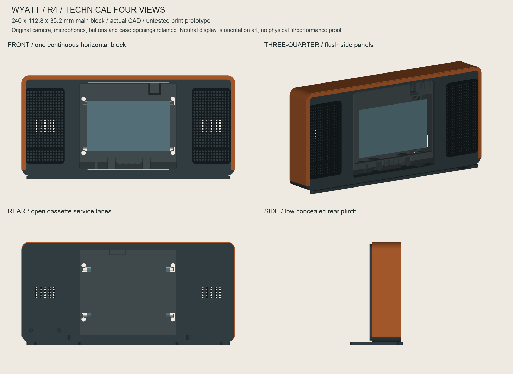

Sensor + wiring, delivered allowance≈¥104¥49 sensor + ¥35 wiring allowance + ¥20 delivery
Complete case, sensor and finish≈¥349–519Reuse suitable power; printing and labour require a quotation.
Prototype procurement reference
This dated estimate was prepared for a bench build whose owner already had the Korvo board, LCD, microphones, amplifiers, two speakers and data cable. Public builders must source those separately. These allowances are not a complete Wyatt build cost or retail price. No firmware is included in this CAD-only release.
Delivery allowance: ¥20 total, not a guarantee for multiple sellers. Full estimate with a new ¥40 supply: ¥389–559. No order has been placed.
Only if needed, or later
- Suitable 5 V / 3 A USB-C power supply, e.g. DFRobot FIT0640 — ¥40. Manufacturer China listed ¥40 on 28 October 2026; US-plug variant, confirm outlet fit. Skip if you already own suitable power. Dry-fit the actual plug and lead in the R4 port-access trial before the full print.
- SD3031 RTC DFR0998 + CR1220 coin cell — ¥45. Later upgrade only. Earlier ¥40 module + ¥5 cell allowance; today’s module price not reverified. No fitted mount or driver in this R4 release. Do not add it to this print order. Cell retains time only and cannot power an alarm.
How the design fits your parts

Technical view of the exported CAD, not a photograph or a completed physical fit test.The main housing keeps the official Korvo inner case and its control/connector openings. The printed R4 main block is 240 × 112.8 × 35.2 mm, with speakers flanking the central Korvo. The low concealed rear support gives a 240 × 116 × 60 mm printed assembly. The provisional leather reference adds up to 241.7 × 116.85 × 60 mm; confirm the real leather stack after printing. The temperature/humidity sensor is in a separate ambient pocket below the left speaker, inside the same body. Two side speaker bays allow a 42 mm outer rim, a maximum 20 mm listed driver depth, and wiring clearance: each bay has a 43 mm nominal bore; its seat is 5 mm behind the front plane, with rear wiring clearance shown in the CAD. The 36 mm front aperture must be checked against the actual stationary rim using the included coupon; it must never press the moving surround.
The SHT40 sits in a ventilated internal pocket below the left speaker, separated from that chamber and the electronics space. Its air path and carrier are intended to limit heat transfer; a physical thermal comparison is still required before trusting the installed reading. Keep leather, adhesive, foam and coating away from the sensing inlet and air openings.
The files are ready for a physical fit prototype. The case has not been printed or fitted yet. Start with the supplied coupons, then the official inner-case fit, then the full set. Geometry validation does not establish temperature accuracy, acoustic quality or final production fit.
Wiring handoff / 接线说明
Ask an electronics technician to use the existing shared S31 I²C bus: GPIO0 = SDA, GPIO1 = SCL, 3.3 V and GND. There is no verified free plug-and-play four-pin sensor socket. Verify the board revision, safe interposer, pin order, pull-ups and cable strain relief before power is applied. Do not move an occupied LCD connector or connect sensor wires to speaker outputs.
请购买指定的 SEN0428 成品模块，不要买裸芯片或其他尺寸的转接板。请电子师傅先核对原理图和这块板的版本，再制作约30厘米用于初次试装的4芯软线，最终长度按实物内部走线确认与安全转接。传感器窗口、通风槽不可涂胶、贴皮或压泡棉。外壳粘胶必须充分固化后再装传感器。本公开CAD版不含固件；后续需使用经验证的兼容固件核对实测温湿度，目前原型没有已安装的室温探头。
Take this to the printer
Send the complete R4 ZIP and bring the actual Korvo, both speakers, SEN0428 and Power/UART cables for fit checks. Trial the roof/side port access with the actual plugs before printing the full cabinet. Ask for millimetres, 100% scale and quantities in the print list. Do not print the combined assembly or leather/sensor reference solids. The removable rear support, two flush side grilles and internal sensor carrier are separate print parts within one horizontal silhouette. The 240 mm main shell needs a suitable large printer; a 256 mm bed class or larger is practical with the specified brim. Check the usable bed allowance in PRINT-MANIFEST.json. Keep the case at its designed scale.
把完整 R4 压缩包给店家，并带实物主板、两只喇叭及传感器。先打印小样，按说明逐项试装。STL 直接用于切片；STEP/STP 用于检查或修改。不要将装配参考模型整体打印，也不要把配合问题用整件缩放解决。